Dansk kulturliv
Officiel lydbog
Kapitel 5 Dansk kulturliv
5.1 INDLEDNING
I Danmark hører kultur og hverdagsliv sammen. Byerne, landskabet, skolerne, teknologien, videnskaben, kunsten og de måder, danskere møder hinanden på, er blevet til igennem en lang kulturhistorie. Dansk kultur har rødder tilbage til den tid, da de første mennesker slog sig ned her. Man kan stadig gøre fund af smykker og brugsgenstande fra de ældste tider og fornemme det liv, der engang blev levet i Danmark.
I landskabet ser vi spor af de ældste tiders gravhøje og store fæstningsanlæg. Kongernes og adelens kultur springer også i øjnene med slotte og herregårde overalt i Danmark. De brede befolkningslags liv og hverdag har gennem mange århundrede også præget landets kultur. Deres arbejde har formet landskabet og kulturen og omgangsformerne på arbejdspladser i Danmark.
I nyere tid, da velfærdsstaten for alvor udviklede sig i anden halvdel af 1900tallet, blev det anset for vigtigt at styrke kulturlivet, videnskaben og kunsten. Et aktivt kulturliv blev betragtet som forudsætningen for det enkelte menneskes trivsel og velbefindende. Kunst og kultur blev set som demokratiets grundlag, og kunsten måtte gerne provokere og stille spørgsmål ved vedtagne sandheder. Selv om det ikke er alle, der ofte går i teateret eller læser mange bøger, skaber kunst og kultur et samfundsliv, der gavner hele befolkningen.
Velfærdsstaten har derfor fremmet kulturlivet og dermed også været med til at gøre Danmark internationalt kendt inden for flere kunstarter.
I dette kapitel gives et overblik over dansk kulturliv.
Det er ikke alle vigtige kunstnere, der bliver nævnt, men kapitlet gennemgår forskellige aspekter af historien om kulturlivet i Danmark inden for følgende områder:
• Litteratur. • Billedkunst og skulptur. • Musik. • Arkitektur og design. • Scenekunst. • Film.
Den danske kunsthistorie har spor helt tilbage til stenalderen. Her keramik i form af det såkaldte 'Skarpsalling-kar', som blev lavet cirka 3.200 år før Kristus. Foto: Roberto Fortuna og Kira Ursem, Nationalmuseet.
5.2 LITTERATUR
Den ældste litteratur i Danmark er skrevet på oldnordisk med runer, vikingeti dens bogstaver. Ordet ”runer” betyder ”hemmeligheder”, og runerne blev ofte tillagt magisk kraft. Den mest kendte danske runeindskrift findes på Harald Blåtands Jellingsten fra anden halvdel af 900-tallet. Her fortæller kong Harald, at han vandt sig hele Danmark og Norge og gjorde danerne kristne. Runeskriften blev udbredt overalt i Norden, hvor den visse steder har været anvendt længe efter, at de latinske bogstaver blev indført.
En stor del af middelalderens litteratur blev skrevet på latin. Det gælder også Saxos (cirka 1160-1208) danmarkshistorie, Gesta Danorum (Danernes bedrifter), fra begyndelsen af 1200-tallet. Værket skulle vise, at Danmark var et land i sin egen ret, uafhængigt af tyskerne, og at Danmarks daværende konge Valdemar den Store (1131-82) var landets retmæssige hersker. Saxo fortæller med både drama, fantasi og humor om dansk historie.
Et andet vigtigt værk fra den tidlige litteraturhistorie er Christian 4.s datter Leonora Christinas (1621-98) skildring af sit fængselsophold, Jammers Minde (1673-74, udgivet i 1869). Her beskriver hun sin lange indespærring og ankla gerne mod hende for landsforræderi. Hun fortæller om, hvordan hun kæmper med at finde en mening med livet, og hvordan hun holder øje med alt, hvad der foregår omkring hende.
1700-tallets og oplysningstidens mest fremtrædende dansk-norske forfatter var Ludvig Holberg (1684-1754). Holberg ville fremme oplysningstidens idealer om, at befolkningen gennem oplysning, tolerance og kritisk tænkning kunne blive friere og bedre mennesker.
Han skrev blandt andet satiriske teaterstykker – komedier – en af de mest berømte er Jeppe på Bjerget (1722), hvor den alkoholiserede sjællandske bonde Jeppe bliver bildt ind, at han er herremand. Jeppe vækker tilskuernes medfø lelse, når han spørger sig selv om, hvorfor han drikker, og fortæller om, hvordan han får tæsk af sin kone. Men man ser også kritisk på Jeppe, da han som herre mand er lige så meget en tyran som dem, der plejer at have magten.
Dansk litteratur fra 1800 til i dag tæller flere verdenskendte forfattere. Den mest berømte er H.C. Andersen (1805-75), der blev født i Odense. Han blev især kendt for sine eventyr, som har glædet både børn og voksne i Danmark og resten af verden gennem næsten to århundreder. Eventyrerne er oversat til over 125 sprog. ”Den lille havfrue”, ”Den grimme ælling”, ”Kejserens nye klæder”, ”Den lille pige med svovlstikkerne” og ”Grantræet” er blandt de mest læste. Andersens eventyr har også inspireret Disneys tegnefilm, blandt andet til filmen Den lille havfrue (1989), som Disney i 2023 genindspillede i en ny version.
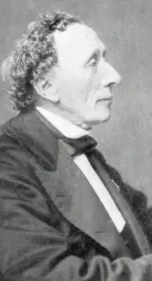
Hans eventyr er skrevet til flere alders grupper på samme tid. På den ene side rummer de børnefortællingers fantasi og overnaturlige verden. På den anden side handler de om emner, som er vigtige for voksne: fordomme, fattigdom, snobberi og dobbeltmoral.
H.C Andersen (1805-75).
Adam Oehlenschläger (1779-1850) var en af nationalromantikkens kendteste digtere. Nationalromantikken ville fremme alt, hvad der er særligt dansk i kultur, natur og historie. Oehlenschläger skrev Danmarks ene nationalsang, ”Der er et yndigt land” (1819). Et andet af hans mest kendte værker er digtet ”Guldhor nene” fra 1802, som handler om fundet af to smukke guldhorn fra oldtiden, som siden blev stjålet og smeltet om.
Steen Steensen Blicher (1782-1848) var en af de første danske forfattere, som skrev om menneskers liv i det dengang fjerne og ukendte Jylland, langt væk fra hovedstaden og byen. Han fortalte om bønders, præsters, embedsmænds, omvandrende handelsfolks og fattiges tanker, håb og værdier. Han er blandt andet kendt for Brudstykker af en Landsbydegns Dagbog (1824), hvor hoved personen, en fattig ung mand, fortæller om sit beskedne liv, sine drømme og sin ulykkelige forelskelse i en pige fra adelen, som han ikke kan få.
Det såkaldte ”moderne gennembrud” i slutningen af 1800-tallet ville gøre op med nationalromantikken og samfundets traditioner. Forfatterne forsøgte at udfordre datidens holdninger til for eksempel religion, kultur, familieliv og køns roller, som hidtil var taget for givet. Blandt tidens vigtigste nye værker er Herman Bangs (1857-1912) Ved Vejen (1886). Værkerne beskriver erfaringer omkring køn og samfund, som datiden helst ville glemme og undgå at tale om. Et andet
hovedværk fra denne periode er Henrik Pontoppidans (1857-1943) Lykke-Per (1898-1904). Pontoppidans store roman handler om Per, som er vokset op på landet i en præstefamilie med traditionelle værdier.
Han tager til København og oplever det moderne samfunds muligheder med blandt andet industri og videnskab, men også en ny rodløs tilværelse. Per har store drømme og planer for en modernisering af Danmark. Pontoppidan modtog Nobelprisen i litteratur i 1917.
Martin Andersen Nexø (1869-1954) skrev især bøger om fattige mennesker og deres kamp for bedre arbejdsforhold og levevilkår. Særlig kendt er romanerne Pelle Erobreren (1906-10) og Ditte Menneskebarn (1917-21). Begge romaner er senere blevet filmatiseret.
Forfatteren Emma Gad (1852-1921) skrev en række skuespil om tidens spørgsmål som kønsroller, moral og politik, der blev opført på Det Kongelige Teater samt andre københavnske scener. Emma Gad mente også, at menne sker gennem klare regler skulle hjælpes til at være sammen med hinanden uden konflikter. Hun er således først og fremmest kendt for ’Takt og Tone – Hvordan Vi Omgås’ fra 1918, som er den bedst kendte danske bog om, hvordan man bør opføre sig. Bogen indeholder derfor en række meget konkrete råd om, hvad man gør i en næsten hver tænkelig situation i hverdagslivet. For eksempel skal man ikke sætte albuerne på bordet eller lægge kniven i munden, når man spiser, mændene bør løfte på hatten, når de hilser, ligesom børn ikke må afbryde voksne, men kun svare venligt og høfligt, når de bliver talt til.
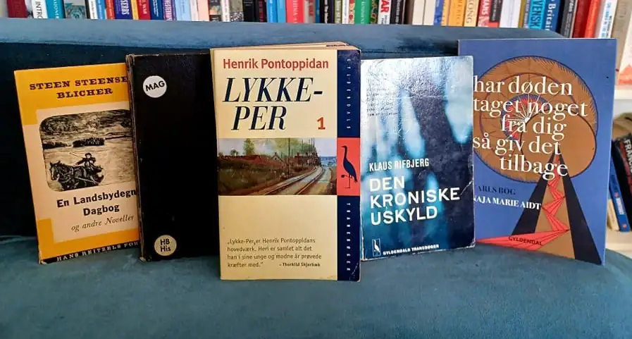
Bøger af fem danske forfattere: Steen Steensen Blicher, Emma Gad, Henrik Pontoppidan, Klaus Rifbjerg og Naja Marie Aidt. Foto: Tue Schou Pedersen.
I 1900-tallets danske litteraturhistorie er Johannes V. Jensen (1873-1950) og Karen Blixen (1885-1962) nogle af de mest værdsatte forfattere. Johannes V. Jensens bedst kendte roman er Kongens Fald fra 1901, en historisk roman om 1500-tallets Danmark. Den fortæller om kong Christian 2.s (1513-23) forgæves kamp for at beholde magten som konge. Den handler om brutalitet, ambitioner og begyndelsen på Danmarks grad vise nedgang til en småstat frem mod 1800-tallet. Et andet hovedværk af Johannes V. Jensen er Himmer landshistorier (1898-1910), som er en samling af kortere fortællinger, der handler om bønder og fattigfolk i Himmerland i Jylland, hvor Johannes V. Jensen voksede op. I 1944 fik Johannes V. Jensen Nobelprisen i litte ratur.
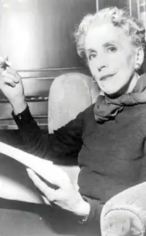
Karen Blixen (1885-1962).
Karen Blixens bedst kendte værk er Den Afrikanske Farm fra 1937. Den handler om hendes oplevelser i Kenya i de første årtier af 1900-tallet, som dengang var en britisk koloni. Blixen fortæller her om livet på sin kaffefarm. Hun er på den ene side præget af de europæiske koloniherrers tankegang, men hun er på den anden side kritisk over for koloniherrerne og deres behandling af den afrikanske befolkning, og hun prøver at indrette livet på sin farm på en anden måde. Hendes værk udtrykker hendes kærlighed til og respekt for Afrikas folk, kultur og natur. Hun fortæller endvidere om den tragiske kærlighedshistorie, hun selv oplever med en engelsk mand. Karen Blixen udgav på både dansk og engelsk en række fortællinger om menneskelige lidenskaber, længsler og livsdramaer, som har gjort hende kendt i hele verden.
Tove Ditlevsen (1917-76) voksede op i en fattig arbejderfamilie på Vesterbro i København, og hun drømte allerede som barn om at blive digter, selv om hendes far sagde, at det kunne piger ikke blive. Hun skrev både digte, romaner og noveller om at være barn, kvinde og fattig i datidens samfund, og blandt hendes hovedværker er Barn dommens Gade (1943). Tove Ditlevsen er i de seneste år, længe efter sin død, også blevet populær i udlandet – især i USA, Storbritannien og Tyskland, hvor hendes erindringsserie, Barndom, Ungdom og Gift (1967-71) er udgivet i nye oversættelser.
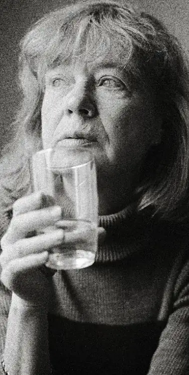
Blandt forfatterne i det 20. århund rede var Klaus Rifbjerg (1931-2015) en af de mest produktive. Mest kendt er romanen Den kroniske uskyld (1958), der fortæller om samfun dets ungdom og skoleliv. Romanens kontante og morsomme kritik af skolen og de voksnes snæversyn har gjort den populær hos generationer af unge læsere.
Tove Ditlevsen (1917-76).
Midten af 1960’erne blev kendetegnet af en udvikling i dansk litteratur, som gik i mange nye retninger med forfattere som Suzanne Brøgger (født 1944). Mens Suzanne Brøgger i høj grad skrev romaner om kvindefrigørelse, var en række andre forfattere inspireret af rockmusik, ungdomsoprør og populærkultur. En anden markant digter var Inger Christensen (1935-2009). Hendes digt ”Sommer fugledalen” (1991) anses som et af de store værker i nyere dansk litteratur. Inger Christensens værker er oversat til mange sprog. Hun blev flere gange nævnt som en stærk kandidat til Nobelprisen i litteratur.
Naja Marie Aidt (født 1963) startede også sit forfatterskab som digter men har siden desuden skrevet romaner og noveller. Hendes mest kendte værk er Har døden taget noget fra dig, så giv det tilbage. Carls bog (2017) om sorgen over hendes unge søns tragiske død.
Michael Strunge (1958-86) fik i 1980’erne mange unge læsere for sine digte om drømme, depression, kærlighed, oprør og storbyliv. Hans hovedværk er Verdenssøn (1985). En af Michael Strunges senere læsere var Yahya Hassan (1995-2020), der debu terede med digtsamlingen Yahya Hassan (2013). Samlingen blev solgt i et rekordoplag på langt over 100.000 eksemplarer og er den bedst sælgende digtsamling i Danmark nogensinde. Hassans digte om opvækst og ungdomsliv som indvandrer i et ghettokvarter skabte voldsom debat, fordi de pegede på alvorlige samfunds problemer og på sammenstød mellem danske normer og normerne i socialt belastede indvandrermiljøer.
Yahya Hassan (1995-2020). Foto: Kim Haugaard/Ritzau Scanpix.
En af nutidens markante danske forfattere er Helle Helle (f. 1965). Hendes nedto nede beskrivelser af hverdagslivet i Danmarks mindre byer blander humor, alvor, sorg og glæde. Med romanen Rødby-Puttgarden (2005) brød hun igennem til et større publikum. Rødby-Puttgarden skildrer de unge søstre Jane og Tines hverdagsliv i Rødbyhavn på Lolland, hvor de begge arbejder som ekspeditricer på færgen til Puttgarden. De seneste år har Helle Helle udgivet romanerne om Hafni. I romanen Hafni fortæller (2023) tager en kvinde ud på en nøje planlagt rejse gennem Danmark for at fejre sin skilsmisse. Hun spiser masser af smør rebrød og møder provinsens mennesker. Men alt går galt, og rejsen, der kun skulle have varet otte dage, ender med at tage en måned, for Hafni vil ændre sig selv, men ved ikke hvordan. Nogle år senere – i romanen Hey Hafni (2025) – møder vi Hafni igen, hvor hun er rejst til byen Brighton på Englands sydkyst for at genfinde lykken, hvilket heller ikke viser sig så enkelt.
En populær genre i nutidig litteratur er den såkaldt auto-fiktion, hvor forfatteren beskriver oplevelser og erfaringer fra sit eget liv og blander dem med fiktive elementer. Blandt temaerne er opvæksten i mindre samfund, at vokse op i en dysfunktionel familie og om ikke "at høre til", når man er fanget mellem på den ene side fordomme og traditionelle normer og på den anden side ønsket om at udleve sine egne ambitioner og følelser.
Leonora Christina Skovs (f. 1976) Den, der lever stille (2017) handler om forfat terens opvækst på dydens smalle sti – "at leve stille" – og om ønsket om at vinde kærlighed og anerkendelse fra forældre, som næsten altid kan finde og forstørre problemer i det, hun gør. Da hun må erkende, at hun er lesbisk, er hun stillet over for valget mellem på den ene side at udleve sine følelser og på den anden side miste forældrenes accept.
Thomas Korsgaard (f. 1995) og Glenn Bech (f. 1991) skriver begge ligeledes ud fra erfaringer om at være i en familie og i et miljø, hvor det ikke er velset at skille sig ud. Endvidere tager deres erindringer afsæt i en barndom og ungdom i fami lier med sociale og psykiske problemer. I roman-trilogien Hvis der skulle komme et menneske forbi (2017), En dag vil vi grine af det (2018) og Man skulle nok have været der (2021) fortæller Thomas Korsgaard – med både alvor og ironi – om den opvækst, han oplevede, med mangel på penge, uddannelse, kærlighed og med fysisk og psykisk vold som en del af opdragelsen.
Glenn Bechs debutbog Farskibet (2021) beskriver det traume, som farens selv mord har givet ham. Centralt i bogen står en familie, som er ødelagt af det, Glenn Bech kalder "giftig maskulinitet". Det vil sige en opfattelse af at være mand, som indebærer dominerende, intolerant og voldelig adfærd. En maskulinitet, som var umulig for faren at leve i, vanskelig for ham selv at være homoseksuel i, og som også viser sig gennem morens voldelige kærester. Glenn Bech er ikke blot kritiker af normer om køn og seksualitet men også af storbyens eliter, der beskyldes for manglende kendskab til provinsen og til samfundets mange mindre privilegerede befolkningsgrupper. Denne kritik kommer ikke mindst til udtryk i hans politiske kampskrift Jeg anerkender ikke længere jeres autoritet (2022).
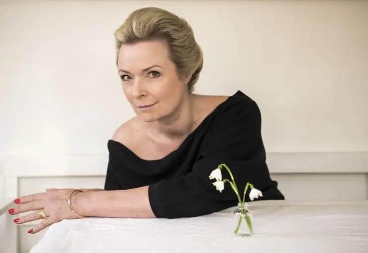
Helle Helle (f. 1965). Foto: Søren Bidstrup/Ritzau Scanpix.
5.3 BILLEDEKUNST OG SKULPTUR
De ældste eksempler på billedkunst og udsmykning af genstande i Danmark går langt tilbage i tiden. Den vigtigste skat fra de ældste tider er den såkaldte Solvogn – en figur, der forestiller solen, der bliver trukket af en hest. Solvognen stammer fra den ældre bronzealder, cirka 1350 før Kristus. I den tids religion blev solen tilbedt, og Solvognen viser, hvordan solen om dagen blev trukket hen over himlen af en af sine hjælpere, en hest. En slange, en fisk og to skibe førte solen igennem resten af døgnets timer. Solvognen er fremstillet af guld og bronze.
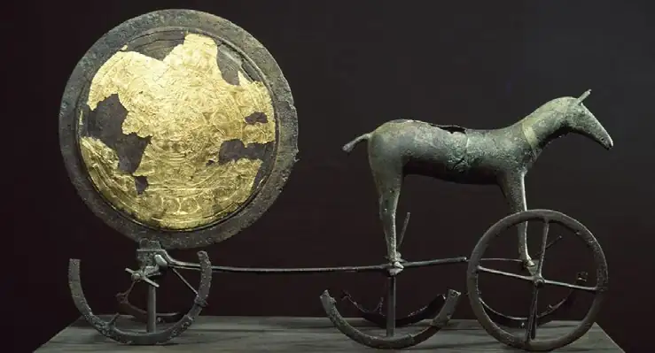
Solvognen fra bronzealderen, som er fundet i Trundholm Mose, Nordvestsjælland. Foto: Nationalmuseet.
Der blev i henholdsvis 1639 og 1734 gjort et stort guldfund i form af guld hornene fra Gallehus i Sønderjylland. De var udsmykket med mange figurer og med runer. Guldhornene stammer fra omkring 400 efter Kristus. De blev stjålet og omsmeltet i 1802. De er genskabt på grundlag af tegninger, men detaljer i udsmykningen er usikre.
Genskabte eksemplarer af guld hornene, som er udstillet på Nationalmuseet i København.
Med kristendommens indførelse i Danmark fra 900-tallet kommer kirkekunsten til Danmark. Den blander sig med vikingetidens udsmykninger med menneske- og dyrefigurer. Det kan blandt andet ses på Harald Blåtands Jellingsten fra anden halvdel af 900-tallet, hvor Jesus fremstilles som en stærk og sejrende vikingekriger.
Kalkmalerier af Biblens fortællinger i Birkerød Kirke nord for København. Foto: Tue Schou Pedersen.
Middelalderens (cirka 1050-1500) mange nybyggede kirker blev udstyret med kalkmalerier, der fungerede som en slags tegneserier. Malerierne skulle bidrage til, at det store flertal af befolkningen, der ikke kunne læse Bibelen og ikke forstod latin, som var kirkens sprog frem til reformationen, også kunne opfatte kristendommens budskaber.
Efter reformationen i 1536 var det især kongen og adelen, der brugte kunsten til at vise deres rigdom og betydning. De mange imponerende kunstværker på Kronborg i Helsingør demonstrerer kongens magt og herunder 40 vævede tapeter, der viser danske konger.
Christian 4. havde særlig stor interesse for kunst og kultur og fik flere kendte udenlandske malere til at komme til Danmark for at male kongen og hans familie samt udsmykke kongens mange slotte.
Med enevældens indførelse i 1660-61 blev magten centraliseret hos kongen. For at kunne uddanne danske kunstnere, der kunne måle sig med udlandets, grundlagde Frederik 5. (1746-66) Det Kongelige Danske Kunstakademi på Char lottenborg på Kongens Nytorv i København, hvor det stadig har sit hjemsted.
Et værk fra denne periode, der anses for at være et højdepunkt i dansk kunst historie, er den franske Jacques-François-Joseph Salys (1717-76) rytterstatue af Frederik 5. (1746-66) fra 1771, der står midt på Amalienborg Slotsplads og regnes for at være en af Europas smukkeste rytterstatuer. Statuen kostede i øvrigt mere at opføre end Amalienborgs fire palæer tilsammen.
Første halvdel af 1800-tallet har fået betegnelsen Guldalderen, fordi dansk kultur, kunst og videnskab blomstrede med flere internationalt kendte navne: for eksempel forfatteren H.C. Andersen (1805-75), filosoffen Søren Kierkegaard (1813-55), fysikeren H.C. Ørsted (1777-1851), digteren Adam Oehlenschläger (1779-1850) og N.F.S. Grundtvig (1783-1872).
En berømt kunstner fra Guldalderen er Bertel Thorvaldsen (1770-1844), som er Danmarkshistoriens bedst kendte billedhugger. I 1797 rejste han til Italien og levede i mange år i Rom. Her skabte han – inspireret af kunsten fra Romer riget – en række skulpturer, blandt andet gravmonumentet over pave Pius 7. I 1838 vendte Thorvaldsen tilbage til Danmark. Hans skulpturer fik deres eget museum, Thorvaldsens Museum, der ligger i København. Museet åbnede 1848 og var den første museumsbygning i Danmark, som befolkningen havde adgang til. Her udstilles Thorvaldsens skulpturer samt hans egen samling af malerier og kunstgenstande fra den antikke oldtid for cirka 2.000 år siden.
Inden for malerkunsten er C.W. Eckersberg (1783-1853) en af de vigtigste kunst nere fra Guldalderen. Eckersberg var blandt andet med Thorvaldsen på studie ophold i Rom. Han arbejdede med motiver fra landskabet og folkelivet omkring Rom.
I tiden herefter har kunstmalere som Vilhelm Hammershøi (1864-1916) præget dansk billedkunst. Vilhelm Hammershøi er ikke mindst blevet værdsat af sin eftertid for sin evne til at male lys og skygge i en boligs rum. Hans maleri, ”Inte riør fra Strandgade 30”, er malet i år 1900 og forestiller malerens kone Ida, der står og læser i ægteparrets hjem på Christianshavn i København. Maleriet blev i 2023 solgt på en auktion i USA for 62,8 millioner kroner og blev dermed det dyrest solgte danske maleri nogensinde.
Solskin i den blå stue, Anna Ancher (1891). Foto: Ritzau/ Scanpix.
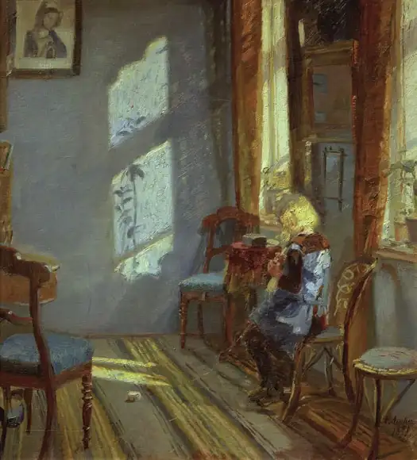
Andre betydelige kunstnere fra samme periode er P.S. Krøyer (1851-1909) og ægteparret Anna Ancher (1859-1935) og Michael Ancher (1849-1927), der hører til kredsen af de såkaldte Skagensmalere. Mod slutningen af 1800-tallet slog en række malere sig ned i Skagen, som er Danmarks nordligste by. De malede både den lokale befolknings hverdagsliv og malernes egne tilværelser. Lyset fra de to have, Skagerrak og Kattegat, der omgiver Skagen, kom til at spille en særlig rolle i deres billeder.
Billedhuggeren Anne Marie Carl-Nielsen (1863-1945) fik som den første kvinde i verden bestilling på at udføre en rytterstatue af en konge. I dag kan hendes rytterstatue af Christian 9. (reg. 1863-1906) ses på Christiansborgs Ridebane, ligesom hun er kendt for at stå bag bronzeporterne i Ribe Domkirke. Anne Marie Carl-Nielsen kæmpede gennem sit liv for kvinders adgang til akademiske uddan nelser og til deres ret til at udstille værker på lige fod med mandlige kunsterne.
I nyere tid hører Asger Jorn (1914-73) til de verdensberømte danske billedkunst nere. Han var med til at stifte den internationale kunstnergruppe Cobra, der fik sit navn fra kunstnernes hjembyer København (Copenhagen), Bruxelles og Amsterdam. Cobra eksisterede fra 1948 til 1951. Hans hovedværk er det store maleri ”Stalingrad”, der er navngivet efter den by, hvor et af 2. Verdenskrigs blodigste slag fandt sted i 1942-43, og hvor Sovjetunionen besejrede Tyskland. Slaget regnes som krigens vendepunkt, som begyndelsen til det endelige tyske nederlag i 1945. Jorn arbejdede på billedet fra 1957-72. Den dominerende farve er hvid-grå som sneen ved byen og med røde stænk overalt, som symboliserer blod.
Tre af de vigtigste billedkunstnere inden for de seneste årtier er Per Kirkeby (1938-2018), Bjørn Nørgaard (født 1947) og Lene Adler Petersen (født 1944). Kirkeby er internationalt anerkendt for sine store abstrakte malerier, der forholder sig til en naturverden, og hans billeder har været udstillet over alt i verden. Lene Adler Petersen har arbejdet med både film, aktioner, grafik, maleri og skulptur. I 1969 skabte hun og hendes mand Bjørn Nørgaard aktionen ”Den kvindelige Kristus”, hvor hun vandrede nøgen gennem Børsen i København med et kors i hånden. Aktionen blev et ikon for en ny eksperimenterende og kritisk kunst vendt mod kapitalistiske og mandsdominerende normer.
Et vigtigt nyere kunstværk er Bjørn Nørgaards hovedværk bestående af 17 store gobeliner (vægtæpper), som udsmykker riddersalen på Christiansborg og fortæller danmarkshistoriens gang tilbage fra vikingetiden og frem til vores tid. Gobelinerne var en fødselsdagsgave fra en række erhvervsorganisationer, virk somheder med mere til Dronningens 50-års fødselsdag i 1990. De tog 10 år at lave og blev indviet på Dronningens 60-års fødselsdag i år 2000.
En anden kunstner, der har gjort sig bemærket de seneste årtier, er danskislandske Olafur Eliasson (født 1967). Et af hans mest kendte værker er Your rainbow panorama (Din regnbueudsigt) (2011) oven på kunstmuseet ARoS i Aarhus, som er en 150 meter lang cirkelformet gangbro i glas, hvor man kan se ud over Aarhus i alle regnbuens farver.
Your Rainbow Panorama, Olafur Eliasson 2011, ARoS Aarhus Kunstmuseum. Foto: Tue Schou Pedersen.
5.4 MUSIK
De mange store horn, der er bevaret fra bronzealderen (1700-500 før Kristus), tyder på, at musik har været kendt i Danmark i flere tusinde år. Man ved dog ikke med sikkerhed, hvad de smukke såkaldte ”lurer” har været brugt til. De er fundet parvis, og eftertiden har forsøgt at spille på dem, men hvordan det skal gøres, vides ikke med sikkerhed. I det hele taget er oplysningerne om musikken før kristendommens indførelse i 900-tallet meget sparsomme.
Med kristendommen kom den katolske kirkemusik til Danmark, og efter refor mationen i 1536 blev salmesangen, hvor menigheden skulle synge med, en vigtig del af gudstjenesten. Reformationen er derfor også blevet kaldt den syngende revolution, og riget blev samlet om salmebøger, som var autoriseret af kongen, og som alle skulle bruge – den første udkom i 1569.
Thomas Kingo (1634-1703), Hans Adolph Brorson (1694-1764), Nikolaj Severin Frederik Grundtvig (1783-1872) og Bernhard Severin Ingemann (1789-1862) er de vigtigste salmedigtere. Deres værker spænder fra salmer med en stærk bevidsthed om, at livet ikke er evigt (Kingo) og en dyrkelse af en inderlig og følel sesfuld tro (Brorson) til salmer, der hylder naturen, barnet og livet på jord som en del af Guds skaberværk (Grundtvig og Ingemann).
I slutningen af 1700-tallet og begyndelsen af 1800-tallet indvandrede flere tyske musikere og komponister til Danmark og fornyede musikken. Friedrich Kuhlau (1786-1832) skrev musik til det nationalromantiske festspil Elverhøi (1828), hvor musikken til digteren Johannes Ewalds (1743-81) ”Kong Christian stod ved højen mast” (1778/79), den ene af Danmarks to nationalsange og Danmarks kongesang, indgår. Teksten til ”Kong Christian stod ved højen mast” er skrevet i 1778/79 af Johannes Ewald (1743-81). Danmark har som et af de eneste lande i verden to nationalsange. Den anden national sang er ’Der er et yndigt land’, som Adam Oehlenschläger skrev teksten til i 1819, hvortil Hans Ernst Krøyer (1798-1879) komponerede musikken i 1835.
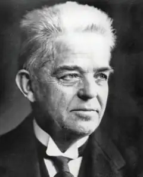
En af Højskolesangbogens mest kendte komponister er Carl Nielsen (18651931), der havde rod i et folkeligt musikliv på Fyn.
Han blev med sine operaer, symfonier, kammermusik og sange den mest fremtrædende danske komponist nogensinde.
Komponisten, Carl Nielsen.
Hans musik tog afsæt i 1800-tallets romantiske stil, men han fik forenet det folkelige og det moderne, og han arbejdede både med enkel og meget kompli ceret musik. Carl Nielsen var gift med billedhuggeren Anne Marie Carl-Nielsen.
Dansk jazzmusik har talt fremragende musikere, kapelmestre og komponi ster fra Leo Mathisen (1906-69) til Palle Mikkelborg (født 1941) og den danskamerikanske Marilyn Mazur (født 1955). I 1960’erne var København hjemsted for en række amerikanske jazzmusikere: eksempelvis Stan Getz, der søgte et kunstnerisk fristed i Danmark i en periode, hvor USA var præget af uroligheder og raceforfølgelse.
I det 20. og 21. århundrede har rock- og popmusikken haft et meget stort publikum. Mange forskellige strømninger gør sig gældende, og komponisten Bent Fabricius Bjerre (1924-2020) blev kendt for at skrive stribevis af melo dier til film og tv-serier som eksempelvis Matador. Blandt de vigtigste bands og musikere er Gasolin, Anne Linnet og TV2. Gasolin med forsangeren Kim Larsen (1945-2018) kombinerede pop og rock og bidrog til den danske sangskat med sange som ”Kvinde min” (1975) og ”Hva’ gør vi nu, lille du? ” (1976). Kim Larsen fik en lang karriere som sanger og sangskriver, og mange af hans sange bliver brugt ved familiefester, fordi han kan udtrykke følelser, humor og solidaritet på en enkel og underfundig måde.
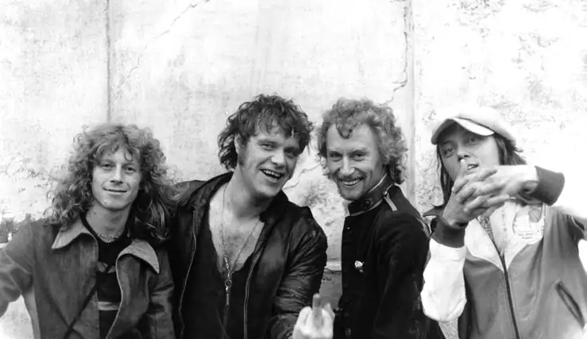
Gasolin, dansk rockgruppe i 1970’erne. Foto: Ritzau Scanpix.
Anne Linnets sang ”Smuk og dejlig” (1976) handler om lesbisk kærlighed, og bandet TV2 fra Aarhus, der selvironisk kaldte sig selv ”Danmarks kedeligste orkester”, synger om blandt andet hverdagen, kærligheden og om vigtigheden af at turde leve livet og gribe dets muligheder. Blandt TV2’s mest kendte numre er ”Nærmest lykkelig”. I 1990’erne havde den dansk-norske musikgruppe Aqua stor succes med deres dansepop, hvor særligt nummeret ”Barbie Girl” var et globalt hit. Aqua udgav to albums i deres storhedstid, og med omkring 28 millioner solgte cd’er er det en af de mest sælgende danske musikgrupper nogensinde.
Musikgruppen Aqua i 1998. Foto: Nils Meilvang/Ritzau Scanpix.
I de senere år har særligt gruppen Lukas Graham med forsangeren Lukas Forchhammer (født 1988) i spidsen haft stor succes i både Danmark og interna tionalt. Gruppen udgav sit første album i 2012, og nummeret ”7 Years” er et af de mest indtjenende danske numre i 2010’erne. Og Karen Marie Ørsted (født 1988), som er kendt under kunstnernavnet MØ, slog igennem med singlen ’Pilgrim’ i 2013 og har siden blandt andet udgivet ’Kamikaze’ og ’Final Song’. Sammen med det amerikanske band Major Lazer og den canadiske sanger Justin Bieber udgav hun desuden i 2016 singlen ”Cold Water”, som blev et stort internationalt hit.
Danmark har vundet Eurovision Song Contest (Det Europæiske Melodi Grand Prix) tre gange. Første gang var i 1963 med ”Dansevise”, som blev fremført af Grethe Ingmann (1938-90) og Jørgen Ingmann (1925-2015). Anden gang i år 2000 med ”Smuk som et stjerneskud/Fly on the Wings of Love”, skrevet og frem ført af duoen Brødrene Olsen, der består af Jørgen Olsen (født 1950) og Niels Olsen (født 1954). Tredje gang var 2013 med ”Only Teardrops ”, som blev sunget af Emmelie de Forest (født 1993).
Emmelie de Forest, vinder af Det Europæiske Melodi Grand Prix 2013. Foto: Keld Navntoft/Ritzau Scanpix.
5.5 ARKITEKTUR OG DESIGN
Arkitektur og design afspejler altid et samfunds muligheder, holdninger og værdier, og er med til at gøre et land genkendeligt. I Danmark er der tradition for at lægge vægt på hensyn til praktiske funktioner og på enkelhed. Det ser man allerede i de mange landsbykirker og bindingsværksgårde, som gennem flere århundreder frem til midten af 1800-tallet blev opført på bakketoppe og i landskabet rundt om i landet. Det er også kendetegnende for de mere eksklusive ejendomme, som efter inspiration fra græsk og romersk arkitektur blev opført i perioden cirka 1760-1860, og som især kom til at præge bybilledet i Køben havn. Et eksempel er Københavns domkirke, Vor Frue Kirke, som er tegnet af C.F. Hansen (1756-1845). Den blev opført i årene 1811-29. Dele af domkirken har form som et romersk tempel, mens indgangen er formet som en græsk tempelfront.
I dag forbindes dansk arkitektur og design især med funktionalismen, som er en måde at formgive på, hvor man især lægger vægt på praktiske funktioner. Funktionalismen opstod i 1920’erne, hvor den først og fremmest var med til at forbedre byernes dårlige boligstandard. I de efterfølgende mange årtier kom funktionalismen i arkitekturen til at præge opbygningen og udformningen af den danske velfærdsstat, for eksempel mange danskeres boliger.
Én af funktionalismens idéer var, at hvis man fjernede ornamenter (udsmykninger) fra for eksempel huse og møbler og gjorde dem mere ens og enkle i udtrykket, så reducerede man også deres tilhørsforhold til bestemte klasser i samfundet. Funktionalismens politiske dagsorden var ønsket om mere social lighed.
På den måde er funktionalismen blevet et udtryk for den brede danske middel klasse og dens moderne livsstil.
Et eksempel på funktionalisme er Aarhus Universitet, som blev opført i 1931-33. Ideen bag universitetet var at skabe en form for akademisk landsby præget af åbenhed og harmoni, samt ønsket om at integrere universi tetets mange formål i en helhed. I Universitetsparken ligger således de bygninger, der huser de enkelte institutter som for eksempel jura, historie, musik og statskundskab. Men parken rummer også kolle gier, en sø og vandløb.
Aarhus Universitet og universitetsparken. Foto: Villy Fink Isaksen.
Andre eksempler på funktionalisme er Poul Henningsens lamper og Børge Mogensens møbler. Poul Henningsen (1894-1967), også kaldet PH, var både samfundsdebattør, revy forfatter, filmproducent og arkitekt, men blev mest kendt for sit lampedesign, som gjorde det elektriske lys blændfrit. Lampen består af tre skærme, hvis størrelser, materialer og farver kan kombineres i talrige variationer, sådan at lampen skaber en både behagelig og praktisk belysning til forskellige formål og priser.
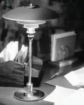
PH Lampe tegnet af Poul Henningsen. I 1940’erne udviklede Børge Mogensen (191472) et funktionalistisk præget møbelprogram for supermarkedskæden FDB (nuværende Coop), der var tilsvarende fleksibelt og ligeledes kom til at præge såvel danske hjem som rådhuse, skoler og sygehuse med et enkelt udtryk.
Arne Jacobsen (1902-71) har også sat stort præg på både arkitektur og design. Han var inspireret af flere forskellige stilarter – ikke mindst funktionalismen. Eksempler på hans arkitektur er Danmarks Nationalbank i København og Aarhus Rådhus. Eksempler på hans design er stolene 7’eren, Ægget samt Stelton kaffe- og tekanderne og andet køkken- og serveringsudstyr.
Dansk arkitektur og design er i dag præget af stor mangfoldighed og globalt udsyn. Arkitekten Jørn Utzon (1918-2008) var en foregangsmand for denne udvikling, da han i slutningen af 1950’erne tegnede det ikoniske operahus i Australiens største by Sydney. Bygningen er udformet som store opretstående skaller beklædt med et mønster af hvide klinker. Den kan fra forskellige vinkler minde om for eksempel en katedral, sejl på et skib eller havets bølger.
Operahuset i Sidney tegnet af Jørn Utzon.
Hermed blev vejen banet for en mere eksperimenterende, ekspressiv og legende byggestil, som har mødt stor international anerkendelse. Aktuelt videreføres den blandt andet af Dorte Mandrup (født 1961), som står bag byggerier som Isafjordcenteret ved Ilulissat-fjorden i Grønland og Vadehavscentret i Ribe. Dorte Mandrups stil er kendetegnet ved, at omgivelserne inspirerer og former bygning erne. Både Isafjordcenteret og Vadehavscenteret spiller tydeligt sammen med landskabernes særlige kendetegn og historie.
Vadehavscenteret tegnet af Dorte Mandrup. Foto: Nationalpark Vadehavet.
Videre har arkitekten Bjarke Ingels (født 1974) og hans tegnestue BIG (Bjarke Ingels Group) tegnet flere prestigebyggerier både i Danmark og udlandet. Det gælder for eksempel Amager Bakke, også kaldet Copenhill, der blev indviet i 2019. Den fungerer både som energieffektiv affaldsforbrænding og rekreativ oase med skibakke, vandrerute og klatrevæg.
5.6 SCENEKUNST
Scenekunsten omfatter en række forskellige genrer: skuespil, ballet, opera, musical og revy. Fælles for scenekunstens forskellige genrer er, at de opføres her og nu foran et publikum. Og som det er tilfældet med andre kunstarter, er også den danske scenekunst inspireret af udlandet.
I 1700-tallet blev dansk-norske Ludvig Holberg (1684-1754) opfordret til at skrive komedier til teateret. Han blev så grebet af arbejdet, at han på få år forfattede 25 komedier, hvor der bliver gjort grin med borgere, bønder og adelsfolk. Ofte er det en klog tjenestepige, der udtænker en intrige mod komediens ufornuftige personer.
En af de mest opførte komedier er Erasmus Montanus (1723), hvor studenten Rasmus rejser fra København hjem til sine gamle forældre og sin ventende forlovede og praler af sin latinske lærdom. Holberg var den første, der skrev komedier på dansk, og komedierne spilles stadig ofte på danske scener.
I begyndelsen af 1800-tallet fornys scenekunsten. Romantikkens digtere brugte dramatikken til at udtrykke store lidenskaber og følelser. De fandt motiver i histo rien, i folkeeventyr og folkeviser. Eksotisk og eventyrligt stof var også vigtigt, og den ledende nationalromantiske digter, Adam Oehlenschläger, lod sig inspirere af de arabiske fortællinger i 1001 Nats Eventyr, da han i 1805 skrev eventyr spillet Aladdin eller Den Forunderlige Lampe om den unge dreng Aladdin, der får fat i en gammel lampe, der viser sig at kunne opfylde alle hans ønsker. Stykket foregår i mellemøstlige omgivelser, men er også en beskrivelse af personer og typer i datidens København.
Det var eftertragtet blandt forfattere at skrive for teateret. Dramatikken blev anset for at være den fornemste kunstart. Det Kongelige Teater blev en vigtig kulturinstitution. Johan Ludvig Heiberg (1791-1860) var sammen med sin hustru Johanne Luise Heiberg (1812-90) fremtrædende her. Han blev direktør og forfatter for scenen, mens hun var en beundret skuespillerinde. De gjorde sig ikke mindst bemærket inden for den fransk inspirerede genre vaudeville, hvor dramatik og musik forenes i lystspil, ofte om kærlighedsforvik linger blandt borgerskabets unge.
Det Kongelige Teater (Gamle Scene) i København. Foto: Tue Schou Pedersen.
På Oehlenschläger og Heibergs tid blev balletten en førende del af scenekunsten. Koreografen August Bournonvilles (1805-79) udgave af en italiensk ballet, Sylfiden, blev opført første gang på Det Kongelige Teater i 1836. Hans koreografi er den eneste, som har overlevet. Dermed er Sylfiden en af verdens ældste overleverede balletter. Sylfiden har en romantisk handling om en ung skotsk mand, James, der på sin bryllupsdag løber bort med en sylfide, det vil sige en usynlig kvinde af luft. Bournonville har internationalt haft enorm betydning for balletten som kunstart. Hans tradi tion blev videreført og fornyet i det 20. århundrede.
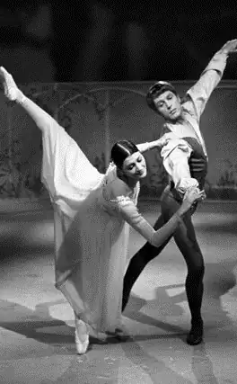
Baletten af sylfiden af August Bournonville.
Savage Rose.
Flemming Flindt (1936-2009) har også været med til at give dansk ballet stor anseelse i udlandet. Sammen med rockmusikerne i Savage Rose skabte han for eksempel balletten Dødens triumf (1971). Balletten begejstrede med sin stærke kritik af et samfund på vej mod undergangen, og den forargede også, da flere dansere optrådte nøgne.
I januar 1939, otte måneder før 2. Verdenskrig startede, havde Kjeld Abells (1901-61) skuespil Anna Sophie Hedvig premiere på Det Kongelige Teater. Skue spillet handler om lærerinden Anna Sophie Hedvig, der under et besøg hos sin familie i København fortæller, at hun har slået den grusomme og tyranniske skolebestyrerinde fru Møller ihjel. Anna Sophie Hedvig er et politisk skuespil, hvor Kjeld Abell indirekte opfordrer til modstand mod fascisme og nazisme.
Digterpræsten Kaj Munk (1898-1944), der blev myrdet af nazister i 1944, skrev sit drama Niels Ebbesen, da han havde gjort op med sine egne sympatier for nazismen. Stykket bygger på en folkevise om den unge jyske adelsmand, Niels Ebbesen, der i 1340 dræber en af de store tyske grever, som Danmark var pantsat til. Stykket blev trykt og forbudt i 1942 og først opført i 1945. Med histo rien om Niels Ebbesen ville Munk vække danskerne til modstand mod nazismen og den tyske besættelsesmagt.
Det var ikke blot i skuespil, men i høj grad også gennem revyerne, at kunst nere udtrykte modstand mod nazismen. Selv om der var indført censur under besættelsen, lykkedes det revyforfatteren Poul Henningsen at indsmugle en opfordring til modstand i Kjeld Abells revy Dyveke (1940), hvor Liva Weel (18971952) sang Poul Henningsens vise ”Man binder os på mund og hånd”. Det var tilsyneladende en sang om fri kærlighed, men publikum kunne ikke være i tvivl om, at budskabet var modstand og sammenhold om frihedsidealer. Teksten er senere indsunget og udgivet af bandet Outlandish i 2004.
Dansk scenekunst efter 2. Verdenskrig har gjort sig gældende inden for forskel lige genrer. En forløber for nutidens standup-komedie var den dansk-ame rikanske Victor Borges (1909-2000) shows med komik og musik. Han fik stor succes i USA med sit onemanshow Comedy in the Music, der blev opført over 800 gange på Broadway i New York fra 1953-56.
I 1960’erne og 70’erne blev tv-teateret populært, især med Leif Panduros (192377) dramatik om konflikter i familien og mellem generationer i en periode med voksende velstand i Danmark. Folk samledes om tv-skærmene, når Panduros stykker blev spillet. Et af de bedste er Farvel Thomas (1968) om en mand, der havner i en dyb krise og ensomhed, da han bliver skilt.
Line Knutzon (født 1965) har fra 1980’erne og 1990’erne været med til at forny skuespilkunsten. Hendes dramatik er satirisk, samfundskritisk og meget morsom. Det er især hendes evne til at gøre replikker absurde og vanvittige, der får hendes stykker til at leve. Hendes første større succes er stykket Først bliver man jo født (1994), der foregår blandt beboere i en opgang med lejligheder.
Musical-genren, der kombinerer traditionelt skuespil og dialog med musik og dans, blev populær fra slutningen af 1970´erne og frem. Musikeren og kompo nisten Sebastian (født 1949) har skrevet musik til nogle af genrens største succeser på dansk grund som Skatteøen (1986) og Ronja Røverdatter (1991). Den sidste er baseret på en fortælling af den svenske børnebogsforfatter Astrid Lindgren.
Og med standup-genrens popularitet i nutiden har scenekunsten fået nye genrer, der har appel til et stort publikum. I den såkaldte standupcomedy står komikeren på scenen og fremsiger jokes og underholdende historier direkte til publikum. Blandt de mest kendte danske standupkomikere er Casper Christensen (født 1968), Anders Matthesen (født 1975) og Nikolai Stokholm (født 1990).
5.7 FILM
En række danskere er i tidens løb blevet internationalt berømte som filmskue spillere eller som instruktører. Omkring år 1900 blev de første film optaget i Danmark. Det var reportager om samfundet. I 1906 blev Nordisk Film grundlagt. Herefter voksede den danske filmindustri hurtigt og blev kendt i mange lande.
Asta Nielsen (1881-1972) var Danmarks første filmstjerne. Hun fik stor succes med roller i stumfilm og indspillede mange film i Tyskland i første halvdel af 1900-tallet. Hun blev fejret for sin erotiske udstråling og sine evner til at udtrykke hele følelsesregisteret på lærredet.
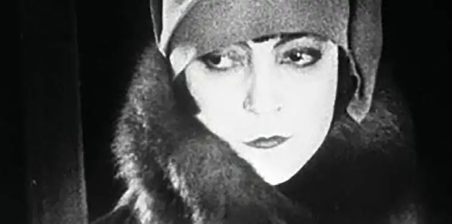
Asta Nielsen.
Carl Th. Dreyer (1889-1968) er den ældre danske filmhistories vigtigste instruktør. Film som Vredens Dag fra 1943 og den franske La passion de Jeanne d’Arc (Jeanne d'Arcs Lidelse og Død) fra 1928 har sikret Dreyer berømmelse. Dreyers nærbilleder og langsomme filmtempo udmærkede hans film. Hans film Ordet fra 1955 bygger på et drama af Kaj Munk, og filmen kulminerer med en scene, hvor en ung mor vækkes til live fra de døde. Dreyer skildrer det gribende mirakel med en fremragende brug af nærbilleder og klip.
Tidlige filmklassikere er desuden Astrid Henning-Jensen (1914-2002) og Bjarne Henning-Jensens (1908-95) Ditte Menneskebarn (1946) efter roman af Martin Andersen Nexø, Johan Jacobsens (1912-72) Soldaten og Jenny (1947) og Henning Carlsens (1927-2014) Sult (1966) efter roman med samme navn af den norske forfatter, Knut Hamsun. De tre film har fattigdom og udstødelse som temaer og bygger på henholdsvis romaner og skuespil.
Ditte Menneskebarn foregår i begyndelsen af det 20. århundrede og handler om en fattig pige, der er født uden for ægteskab og udsættes for vold og mishandling. Hun bliver også selv gravid uden at være gift og er fanget i fattigdommens onde cirkel. Soldaten og Jenny skildrer forholdet mellem en ung kvinde og en soldat,
der tilfældigt mødes på en bar. Jenny har tidligere fået foretaget en abort, som dengang var forbudt, og trues nu af straf og udstødelse. Henning Carlsens Sult foregår i slutningen af 1800-tallet og handler om en ung forfatter, der strejfer rundt i Norges hovedstad Kristiania (det nuværende Oslo). Han er blevet smidt ud af sit lejede værelse og har ikke penge til mad. Han prøver at pantsætte sine få ejendele, selv sine briller og knapperne i sit tøj, og han ydmyger sig for at skaffe et job. Hans situation bliver mere og mere desperat, alt imens han færdes blandt byens borgere, som om han ikke har problemer.
Perioden fra 1950 til 1975 var en storhedstid for kommercielle folkekomedier. Den største succes og Danmarks mest sete film blev Alice O’Fredericks (18991968) og Jon Iversens (1889-1964) filmatisering af Morten Korchs (1876-1954) roman De røde heste (1950). Filmen fortæller den dramatiske historie om, hvordan en ung landmand redder sin gård fra at falde i skurkes hænder ved at vinde et stort hestevæddeløb.
Erik Balling (1924-2005) lærte af folkekomedierne og begejstrede publikum med filmserien Olsenbanden på i alt 14 film, den første fra 1968. Filmene er inspireret af tegnefilm og handler om en fiktiv dansk forbryderbande. Med Egon Olsen som leder har banden store, snedige planer for at begå et kup, der skal gøre dem til millionærer, men som den for det meste kommer helt galt afsted med på en måde, som man må grine af. Filmserien blev kopieret i Norge og Sverige og var populær med tysk tale i det kommunistiske Øst-Tyskland.
Også på tv var Erik Balling en meget brugt instruktør. Tv-serien Matador udspiller sig i 1930’ernes og 1940’ernes Danmark. Rammen om fortællingen er den fiktive sjællandske provinsby Korsbæk. Vi følger dens indbyggere og oplever deres familieliv, karriere, kærlighed og kamp med kønsrollerne. Tidens normer og vigtige historiske begivenheder bliver beskrevet. Seriens 24 afsnit blev første gang vist i fjernsynet i 1978-82 og er senere genudsendt talrige gange. Matador er den mest sete tv-serie i Danmark nogensinde. Manuskriptet er især blevet skrevet af forfatteren Lise Nørgaard (1917-2023). Mange begivenheder i serien er inspireret af hendes egen barndom og ungdom.
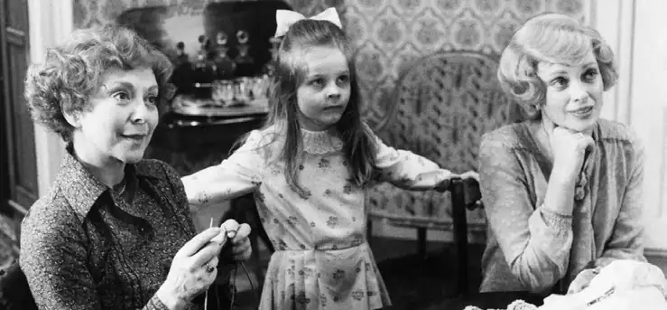
Tv-serien Matador. Foto: Børge Lassen/Ritzau Scanpix.
Film for børn er en vigtig del af dansk filmkunst. Busters Verden (1984) af Bille August (født 1948) er en klassiker inden for denne genre. Busters verden baserer sig på en roman af den populære børnebogsforfatter Bjarne Reuter (født 1950). I filmen møder vi Buster, der har det svært både derhjemme og i skolen, hvor han altid bliver mobbet. Men hans fantasi og evner for tryllekunst hjælper ham igennem mange af vanskelighederne. I 1982 gav Folketinget danske børnefilm bedre økonomiske vilkår og anerkendte dermed børnefilmgenrens kunstneriske betydning.
Der blev også produceret fremragende film om børn og unge, som også var for voksne. Nils Malmros (født 1944) instruerede for eksempel en lang række film om unge, blandt andre Kundskabens træ (1981). Filmen handler om mobning og forelskelser i en klasse af pubertetsbørn. Nogle kammerater bliver lukket ude af fællesskabet, og kæresteforhold begynder og slutter meget pludseligt. De voksne – både lærerne på skolen samt forældrene – forstår ikke de unges liv og deres forhold til hinanden. Mange biografgængere – unge som voksne – genkendte ofte sig selv i Malmros’ skildring af den tidlige ungdom.
Dogme 95 var et manifest, som instruktørerne Lars von Trier (født 1956) og Thomas Vinterberg (født 1969) i 1995 skrev sammen med Søren Kragh-Jacobsen (født 1947) og Kristian Levring (født 1957). De fire ”dogmebrødre” forpligtede sig til at lave enkle film med fokus på den gode historie frem for de tekniske effekter. Dogme 95 vakte opsigt, og flere dogmefilm blev store succeser både blandt publikum og kritikere i Danmark og udlandet. Lars von Triers første dogmefilm var Idioterne (1998), der handler om en flok voksne mennesker, som vil provokere omgivel serne og realisere sig selv ved at spille ”idioter”, det vil sige retarderede.
Filmen afslører på humoristisk og tragisk vis både gruppens selvopta gethed og omgivelsernes manglende tolerance. Lars von Trier vandt desuden i 2000 Den Gyldne Palme for musical filmen Dancer in the Dark (2000), der havde den islandske sangerinde Björk i hovedrollen.
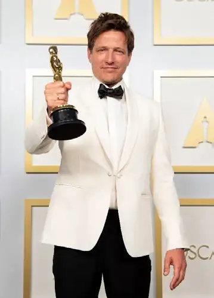
Thomas Vinterbergs familiedrama Festen (1998) vandt juryens special pris (Prix du Jury) på filmfestivalen i Cannes i Frankrig i 1998, mens en anden af hans film Druk (2020) vandt en Oscar i 2021. I Druk forsøger fire gymnasielærere at gøre sig selv og deres liv mere spændende ved at drikke, så de har alkohol i blodet hele dagen. Det går godt i begyndelsen, men efterhånden kommer det ud af kontrol og ender i en tragisk ulykke.
Thomas Vinterberg vandt en Oscar for filmen ’Druk’. Foto: Matt Petit/ Ritzau Scanpix.
Men det er også en film om at slippe kontrollen i sit liv, at vågne op, mærke livet, begynde at leve igen – og hvilke konsekvenser det kan have. Ulykken i filmen er for Thomas Vinterberg en konsekvens af at mærke livet.
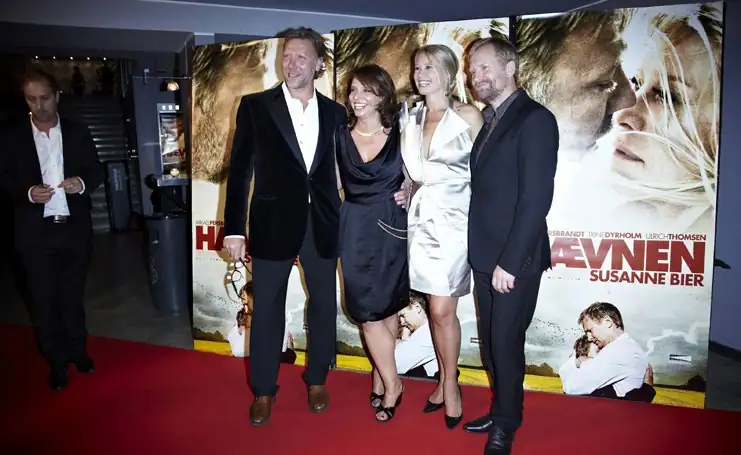
Susanne Bier (nr. 2 til venstre) til gallapremiere på Hævnen i biografen Imperial i København sammen med tre af skuespillerne fra filmen. Foto: Bo Nymann/ Ritzau Scanpix.
Også instruktørerne Gabriel Axel (1918-2014), Bille August og Susanne Bier (født 1960) har modtaget international anerkendelse. Gabriel Axel vandt som den første danske instruktør en Oscar for filmatiseringen af Karen Blixens fortælling Babettes Gæstebud (1987) i 1988 om, hvordan en streng kristen menighed, der fornægter livets goder, en dag får serveret et overdådigt måltid og derfor pludseligt bliver gladere og bedre mennesker.
Bille August vandt både en Oscar og De Gyldne Palmer for filmen Pelle Erobreren (1987). Filmen er baseret på Martin Andersen Nexøs verdensberømte roman fra begyndelsen af det 20. århundrede. Susanne Bier har vundet både en Oscar og en Golden Globe for Hævnen (2010), som sætter fokus på i hvilke situationer i livet, det er henholdsvis rigtigt og forkert at hævne sig på andre.
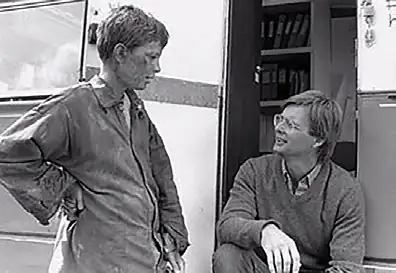
Pelle Erobreren af Bille August.
En af det 21. århundredes mest fremtrædende skuespillere er Mads Mikkelsen (f. 1965). Mads Mikkelsen har modtaget prisen for bedste mandlige skuespiller ved Cannes Filmfestival 2012 for rollen i ’Jagten’ (2012) som pædagogmedhjæl peren Lucas, der bliver falsk anklaget for pædofili. Han bliver udstødt af alle i landsbyen, og snart har han hverken arbejde, venner, kæreste eller søn. Endvi dere spiller han den ene af de fire gymnasielærere i Druk, hvor den uinspire rende, usikre og uengagerede historielærer Martin vågner op til ukendelighed, når først han får alkohol i kroppen. Han genvinder arbejdsglæden og med den også selvtilliden, der på ny engagerer og motiverer elevernes interesse for faget.
Mads Mikkelsen har også haft roller i store udenlandske film, herunder i James Bond-filmen Casino Royale (2006). Her er Mads Mikkelsen James Bonds hoved modstander, der til sidst bliver skudt og dræbt af en terrorist, som spilles af danske Jesper Christensen (f. 1948).
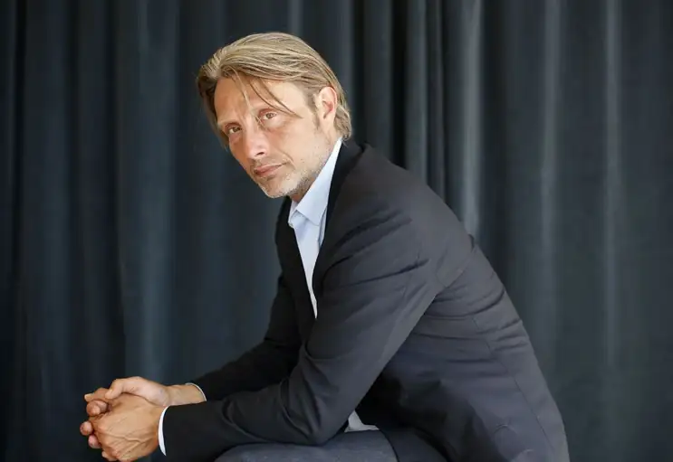
Mads Mikkelsen (f. 1965). Foto: Loic Venance/Ritzau Scanpix.
Jesper Christensen havde i øvrigt hovedrollen som alkoholikeren Kaj i filmen Bænken (2000), der er et portræt af Danmarks socialt belastede miljøer. Kaj har været på kontanthjælp i mange år, forsømmer konsekvent kommunens aktive ringstilbud og tilbringer de fleste af dagens timer på en bænk i et socialt bolig byggeri i en københavnsk forstad i selskab med masser af øl, spiritus, cigaretter og kvarterets øvrige alkoholikere. Kaj har en datter, han ikke har set i 20 år, og da hun en dag tilfældigvis flytter ind i ejendommen, står han pludselig ansigt til ansigt med sin fortid, sin manglende ansvarsfølelse og sit forspildte liv. I Drabet (2005), som er den ene af to opfølgere til Bænken, spiller Jesper Christensen en gymnasielærer, der på grund af erotiske følelser for en tidligere elev mister sin moralske dømmekraft, da eleven begår et drab på en politibetjent i en politisk sags tjeneste.
Sofie Gråbøl (f. 1968) som Sarah Lund i tv-serien Forbrydelsen. Foto: Linda Johansen/ritzau Scanpix.
Sofie Gråbøl (f. 1968) har spillet flere hovedroller som lidt usikre, akavede personer. Hun blev for alvor kendt i filmatiseringen fra 1986 af Tove Ditlevsens roman Barndommens Gade i hovedrollen som den 14-årige Ester, som vokser op på Vesterbro i mellemkrigstiden. Ester føler sig fanget mellem barndom og voksenliv. Mellem på den ene side arbejdsklassens hårde levevilkår og datidens forventninger til kvinder og på den anden side drømmen om at bryde fri af den kendte verden og blive til noget større. I filmen Der kommer en dag (2016), som udspiller sig på et sadistisk børnehjem for drenge i slutningen af 1960’erne, spiller hun lærerinden Lillian. Lillian vakler mellem loyalitet over for sin arbejds giver og sit ønske om at kæmpe for drengene.
Når man taler om Sofie Gråbøl, er tv-serien Forbrydelsen (2007-12) ikke til at komme udenom. Krimiserien blev meget populær, ikke blot i Danmark, men også i udlandet. Her optræder hun i rollen som vicekriminalkommissær, Sarah Lund, der skal opklare mordet på en 19-årig kvinde. Millioner af mennesker sad foran tv-skærmen og gættede med på, hvem morderen var.
En anden af Danmarks mest anerkendte skuespillere er Trine Dyrholm (f. 1972). Hun har blandt andet medvirket i Hævnen, hvor hun spiller rollen som Marianne, hvis mand har været utro, og hvis ældste søn bliver mobbet i skolen. Rollen som hustruen, der føler sig svigtet af sin mand, går også igen i Kollektivet (2016). Den frisindede Anna er – i takt med 1970’ernes idealer – skeptisk over for kernefa milien og tilhænger af fri kærlighed men vågner op til virkeligheden, da hendes mand forelsker sig i en yngre kollega. Et andet højdepunkt i Trine Dyrholms karriere, og en anden film om bristede idealer, er i Dronningen (2019) i rollen som advokaten Anne, der arbejder engageret med at forsvare børn og unge mod seksuelle overgreb men sætter sin egen moral over styr, da hun forfører sin 17-årige stedsøn.